Set Name: The Council of Elrond
Set Number: 79006
Theme: The Lord of the Rings (licensed)
Year released: 2013
Price: $29.99
Piece Count: 243
Minifigures Included: 4
Rivendell is one of my favorite fictional locations.
The Elven architecture, the trees, the waterfalls ... *Sigh* If only it were real.
Let's see how well this set captures that essence!
-The Box-
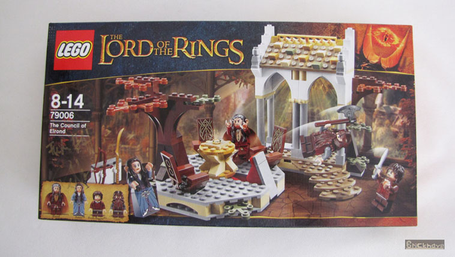
Instead of a picture of the One Ring like in the previous wave, we have a picture of The Eye of Sauron in the top-right corner.
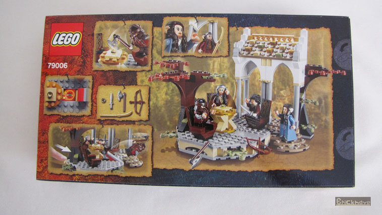
-The Contents-
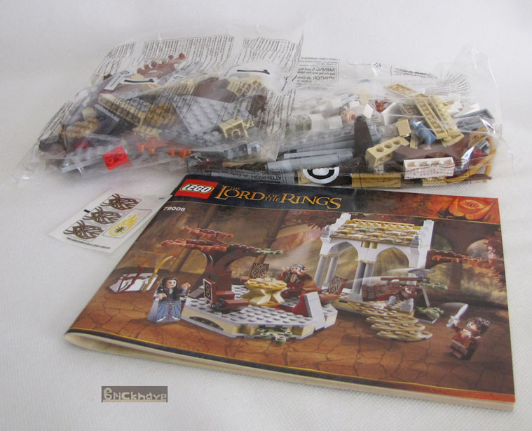
Instructions, a small sticker sheet, and two bags of bricks and smaller bags of bricks.
Bag #1 gives us the round patio, bag #2 gives us the Elven building (or at least section of one).
-The Minifigures-
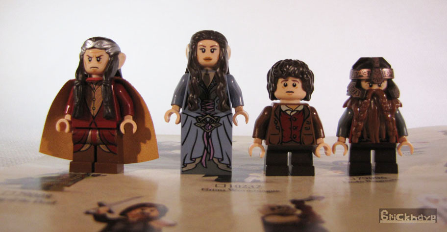
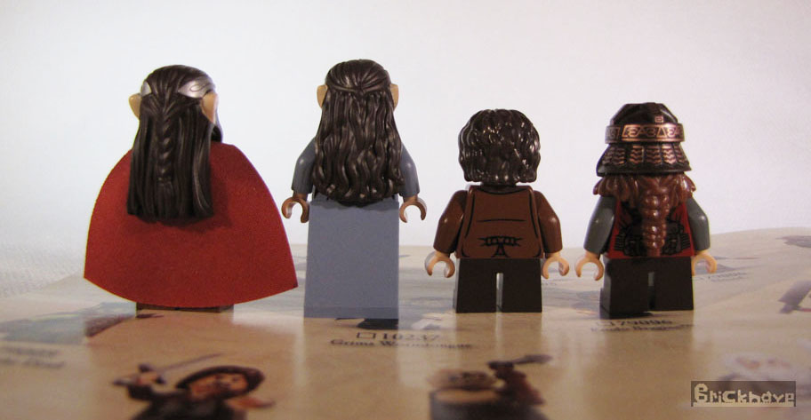
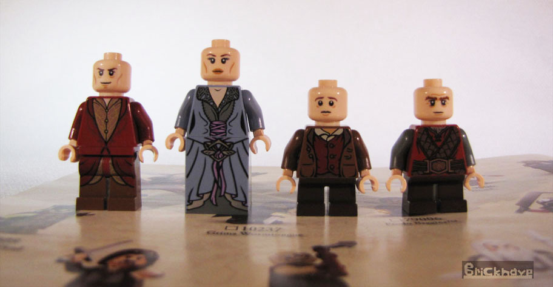
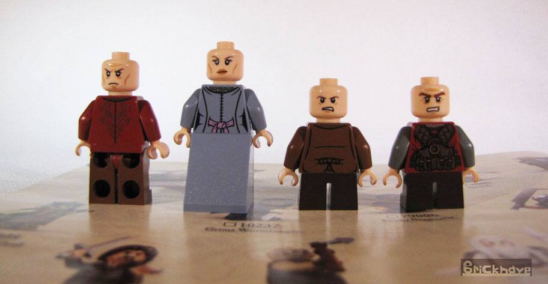
From left to right: Elrond, Arwen, Frodo Baggins, and Gimli.
If you're unfamiliar with LOTR, these are all good-guys.
-The Pieces-
The Extra pieces:
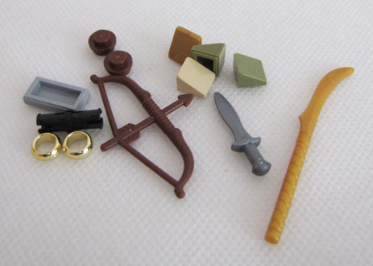
Extra weapons and two extra rings! Woot!
The most interesting pieces (in my opinion):
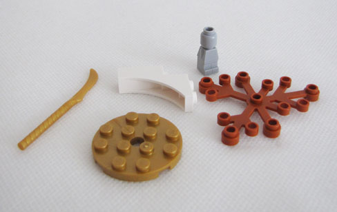
Elven Sword (x2), Gold 4x4 Round Plates (x2), Light Gray Microfigures (x2),
Dark Orange Tree Branch with Leaves (x3), White 1x3x3 Half Arch (x4)
-The complete model(s)-
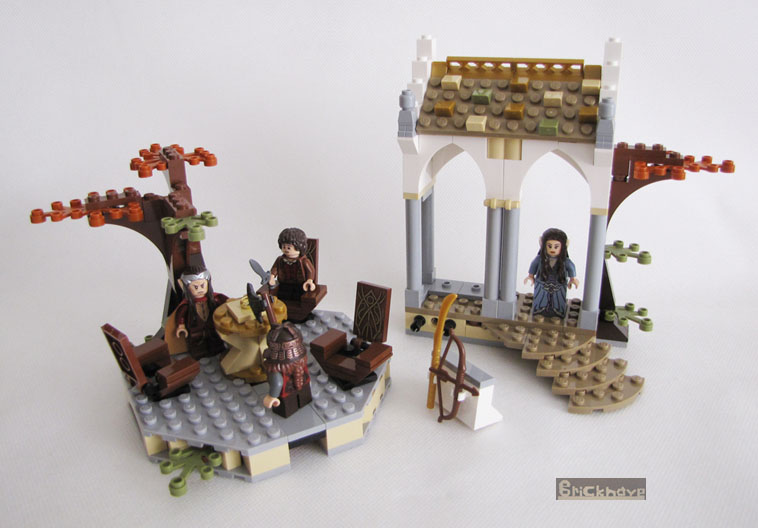
We have two big modules and a detachable weapons rack.
-The Function-
The function simulates the scene in which Gimli tries to destroy the One Ring, but is flung back by it's power!
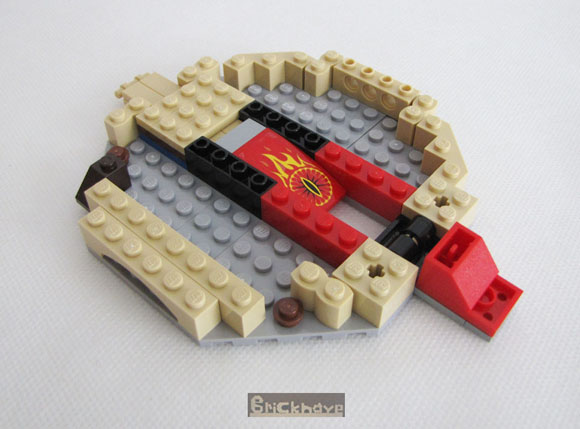
The inner workings of the function, for those of you who may be curious.
-Conclusion-
Excellent pieces and design for this price range!
The modules fit together perfectly, and I find the function to be cleverly made. It definitely captures the essence of Rivendell.
My one gripe is that the chairs are somewhat useless, because the Minifigures can't sit into them.
You can pretend Frodo and Gimli could sit into the chairs, but that's about it.
Theoretically, Elrond should be able to sit into one of the chairs, but his hairpiece and cape make that non-feasible.
What would've made this set better is if Aragorn (or better yet, Boromir) was included instead of Frodo, so one of the three chairs could be properly used.
On a scale of 1-to-5 I rate this a 4.
-Bonus pictures-
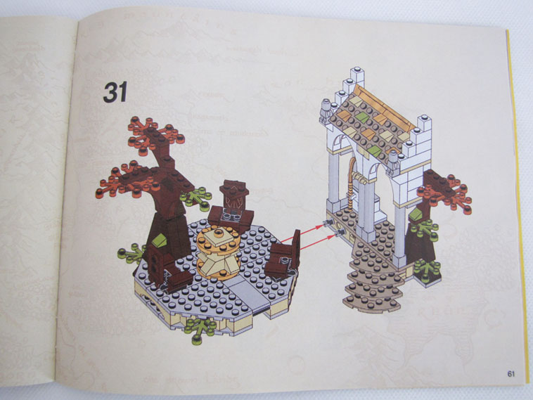
Can you spot the printing mistake?
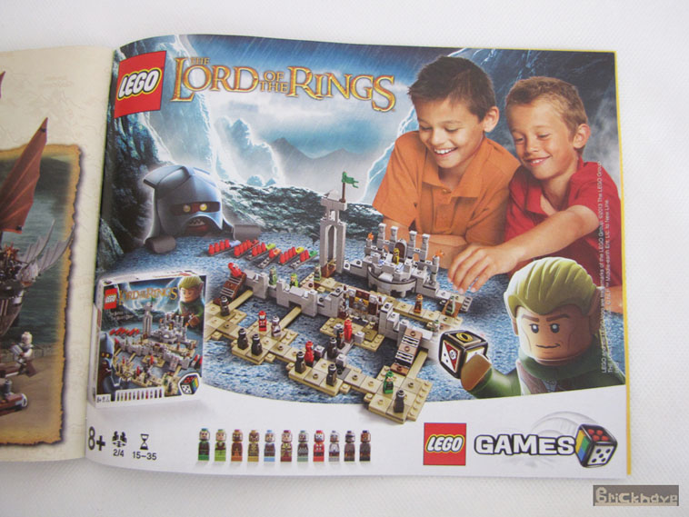
I didn't know about a LEGO LOTR board game until I found this teaser for it in the instruction manual.
I'm quite surprised I didn't learn about it from the internet.